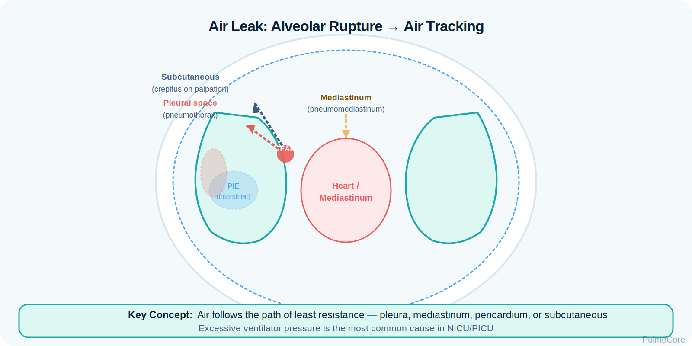
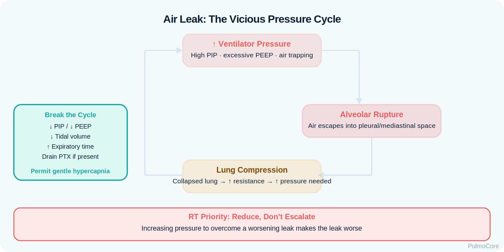
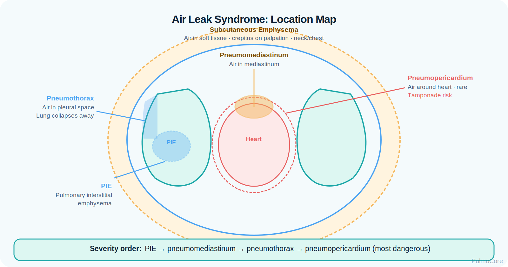
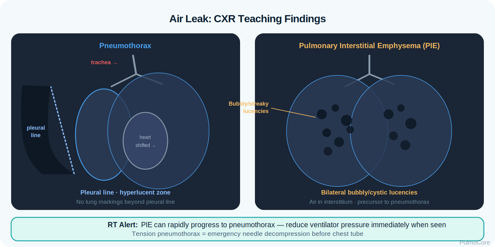
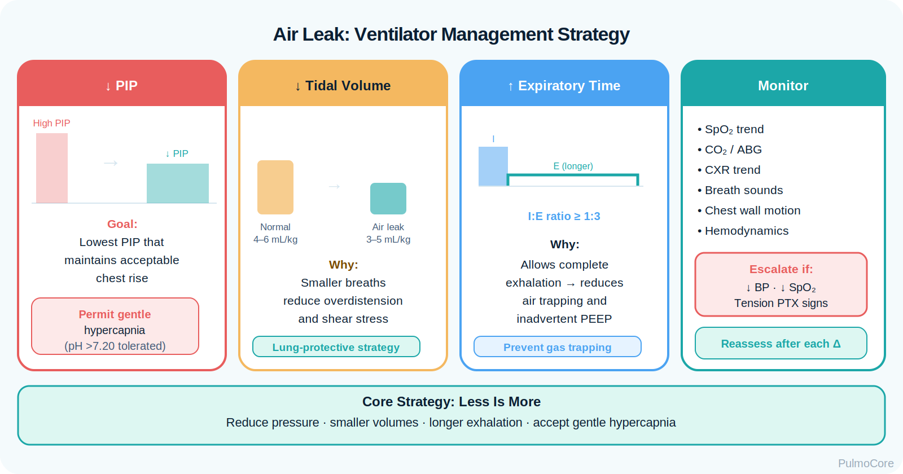

Pulmonary air leak syndromes occur when air escapes from the normal tracheobronchial or alveolar space into tissues where it does not belong, such as the pleural space, mediastinum, pericardium, or subcutaneous tissue. This module focuses on RT recognition, pressure-related pathophysiology, diagnostic clues, neonatal and ventilated-patient risk, management priorities, and escalation when an air leak threatens ventilation or circulation.
Category Air Leak / Barotrauma Syndromes
Estimated Time 30–40 minutes
Level Core RT Knowledge
2027 NBRC Disease Alignment Recognize adult and neonatal air-leak patterns; interpret breath sounds, oxygenation, hemodynamics, imaging, transillumination, ventilator pressures, and chest-drainage findings; support oxygenation and ventilation while limiting further distending pressure; and escalate tension pneumothorax, hemodynamic compromise, or persistent air leak. Directly covered: Patient Data, Clinical Assessment, Diagnostic Interpretation, Device Management, Oxygenation/Ventilation Support, Therapy Modification, and High-Risk Response · Depth: Information Gathering and Decision Making.
Learning Objectives
By the end of this module, learners should be able to connect pressure injury, alveolar rupture, air dissection, clinical findings, imaging patterns, emergency priorities, and ventilator adjustments used to limit worsening air leak.
1. Explain pathophysiology Describe how alveolar rupture allows air to escape into the pleura, mediastinum, pericardium, or subcutaneous tissues.
2. Differentiate air leak types Compare pneumothorax, pneumomediastinum, pulmonary interstitial emphysema, pneumopericardium, and subcutaneous emphysema.
3. Interpret assessment data Use breath sounds, chest movement, oxygenation, hemodynamics, transillumination, chest x-ray, and ventilator trends to identify severity.
Watch this quick overview before moving into the disease snapshot.
Disease Snapshot
Air leak syndromes are pressure-related complications in which gas leaves the alveoli or airway and tracks into abnormal spaces. They are especially important in neonates receiving positive pressure ventilation, patients with underlying lung disease, trauma patients, and mechanically ventilated patients exposed to high pressures or excessive tidal volumes.
What it is: Escape of air from alveoli or airways into abnormal spaces.
Primary problem: Pressure gradient causes rupture and air dissection.
Classic syndromes: Pneumothorax, pneumomediastinum, PIE, pneumopericardium, and subcutaneous emphysema.
Key diagnostic clue: Sudden deterioration plus asymmetric breath sounds, chest x-ray findings, or transillumination in neonates.
Acute danger: Tension air leak with impaired venous return, hypotension, bradycardia, and severe hypoxemia.
RT priority: Recognize deterioration, reduce pressure injury risk, support oxygenation, and escalate rapidly.
RT Clinical Connection
For RTs, air leak syndromes are not just radiology findings. They are bedside emergencies when oxygenation, ventilation, or circulation suddenly worsens. The RT must connect changes in breath sounds, SpO₂, heart rate, blood pressure, ventilator pressures, and chest movement to possible air escape.
Board Prep Frame
Immediately associate air leak syndromes with positive pressure ventilation, high transpulmonary pressure, neonatal RDS or meconium aspiration, sudden hypoxemia, asymmetric chest findings, tracheal shift, transillumination, chest tube drainage, and ventilator adjustments that reduce further pressure injury.
Quick Pre-Check
Start with the core air leak pattern
Which statement best describes the basic pathophysiology of pulmonary air leak syndromes?
Anatomy & Pathophysiology
Pulmonary air leaks usually begin when an alveolus ruptures because pressure inside the alveolus exceeds the strength of the surrounding tissue. Escaped air then follows tissue planes toward the pleural space, mediastinum, pericardium, interstitium, or subcutaneous tissues.

Visual focus: alveolar rupture, pressure gradient, and air tracking into abnormal spaces.
High alveolar pressure or fragile lung tissue → alveolar rupture → air leaves normal gas-exchange space → air dissects into pleura, mediastinum, pericardium, interstitium, or subcutaneous tissue → impaired ventilation, oxygenation, or circulation depending on location and pressure.
How Air Leak Syndromes Develop
Mechanism
What Happens
Why It Matters
Excessive alveolar pressure
Positive pressure, high PIP, air trapping, or forceful ventilation increases pressure inside fragile alveoli.
Raises risk for alveolar rupture.
Alveolar rupture
Air escapes from the alveolus into surrounding tissue planes.
Creates the source of the leak.
Air dissection
Escaped air tracks along bronchovascular sheaths or into the pleural space.
Determines whether the patient develops PIE, pneumomediastinum, pneumothorax, or subcutaneous emphysema.
Compression effects
Trapped air can compress lung tissue, heart, or great vessels.
Can impair oxygenation, ventilation, and venous return.
Worsening pressure cycle
More positive pressure may enlarge the leak if ventilator settings are not adjusted.
RTs must balance support with lung-protective strategy.
High-Yield Mechanism
The same pressure that helps open unstable alveoli can worsen an existing air leak. This is why the RT must monitor oxygenation and ventilation while also watching PIP, plateau pressure, tidal volume, PEEP, and signs of dynamic hyperinflation.

Visual focus: positive pressure support can be lifesaving, but excessive pressure may enlarge the leak.
Danger Sign
Sudden hypoxemia, hypotension, bradycardia, absent or diminished unilateral breath sounds, and tracheal deviation suggest a tension air leak until proven otherwise.
Click the Air Leak Hotspots
Click each hotspot to reveal how air location changes the clinical problem.
Start here: Click all four hotspots to complete this activity.
0 / 4 hotspots reviewed
Types, Causes & Risk Factors
Air leak syndromes are named by where the escaped air collects. Risk increases when lung tissue is fragile, noncompliant, obstructed, unevenly ventilated, or exposed to high distending pressure.
Air Leak Type
Where the Air Goes
Classic Clue
Pneumothorax
Pleural space.
Sudden distress, unilateral diminished breath sounds, possible mediastinal shift if tension develops.
Pneumomediastinum
Mediastinum around the heart, trachea, and great vessels.
Central chest air, possible crepitus, sometimes Hamman crunch.
Pulmonary interstitial emphysema
Interstitial tissues around airways and vessels.
Neonatal ventilator complication with cystic or linear lucencies on imaging.
Pneumopericardium
Pericardial sac.
Can restrict cardiac filling and mimic tamponade physiology.
Subcutaneous emphysema
Soft tissues of neck, face, or chest wall.
Palpable crackling or crepitus under the skin.

Visual focus: location determines assessment findings and urgency.
Sort the Air Leak Findings
Choose the best category for each item, then check your answers.
Pulmonary interstitial emphysema
High peak inspiratory pressure
Pneumomediastinum
Sudden hypotension with unilateral absent breath sounds
Meconium aspiration with air trapping
Complete the sorting activity to continue.
Clinical Manifestations
Presentation depends on where the air collects and how quickly pressure builds. The RT should look for sudden changes from baseline: increased work of breathing, worsening oxygenation, unequal breath sounds, chest asymmetry, crepitus, hemodynamic instability, or unexpected ventilator pressure changes.
Finding Type
What the RT May See
Symptoms
Acute dyspnea, chest pain, agitation, anxiety, or sudden deterioration in an infant or ventilated patient.
Hypotension, bradycardia, poor perfusion, narrow pulse pressure, or shock with tension physiology.
Important Teaching Point
A ventilated neonate or adult who suddenly desaturates and develops asymmetric breath sounds should be assessed for tube displacement, obstruction, equipment failure, and pneumothorax. Tension pneumothorax must be treated urgently.
Sort the Air Leak Clinical Signs
Categorize each finding as an Expected Finding, Concerning Sign, or Emergency Sign, then check your answers.
Subcutaneous emphysema with mild crepitus
Increasing oxygen requirement with asymmetric breath sounds
Sudden hemodynamic collapse with absent unilateral breath sounds
Rising peak inspiratory pressures with falling tidal volumes
Tracheal deviation away from the affected side with hypotension
Complete the sorting activity to continue.
Diagnostics & Assessment
Diagnosis combines bedside assessment and imaging. In unstable patients, treatment may need to occur before a confirmatory x-ray if tension physiology is strongly suspected.
Bedside Assessment and Imaging
Assessment Tool
Air Leak Pattern
RT Interpretation
Auscultation
Unilateral diminished or absent sounds may suggest pneumothorax.
Compare both sides quickly during sudden deterioration.
Chest movement
Asymmetric expansion can occur with pneumothorax.
Look for one side moving less than the other.
Transillumination
Bright hemithorax in neonates may suggest pneumothorax.
Helpful rapid screening tool in newborns; confirm if patient stable.
Chest x-ray
Visible pleural line, collapsed lung, mediastinal air, PIE lucencies, or subcutaneous air.
Main diagnostic test when patient is stable enough.
Ultrasound
Absent lung sliding or lung point may support pneumothorax.
Can be rapid at bedside where available.
Ventilator graphics
Sudden pressure/compliance change, low exhaled VT, or worsening air leak.
Supports recognition but does not replace clinical assessment.

Visual focus: identify pleural line, collapsed lung margin, mediastinal shift, and interstitial air patterns.
ABG and Ventilator Pattern
Pattern
Meaning
Falling PaO₂ or SpO₂
Reduced ventilation/perfusion match, lung collapse, or worsening gas exchange.
Rising PaCO₂
Worsening ventilation, fatigue, or reduced effective tidal volume.
Increasing PIP with stable plateau
May suggest resistance problem, secretions, or tube issue rather than compliance alone.
Increasing PIP and plateau pressure
Suggests reduced compliance; pneumothorax or hyperinflation should be considered in the right context.
Severity, Risk Stratification & Decision Cues
Severity is based on physiologic impact, not just the amount of visible air. A small stable pneumomediastinum may need observation, while a rapidly expanding tension pneumothorax can become immediately life-threatening.
Severity Level
Typical Pattern
Action Logic
Mild / stable
Small air leak, stable vital signs, minimal oxygen need.
Observe, monitor, reduce risk factors, repeat imaging as ordered.
Moderate
Increased WOB, increased oxygen need, visible pneumothorax without shock.
Notify provider, prepare for drainage if worsening or clinically significant.
Severe
Severe hypoxemia, high WOB, rising PaCO₂, worsening ventilator pressures.
Escalate, support ventilation, reduce pressure injury, prepare emergency intervention.
Tension physiology
Hypotension, bradycardia, tracheal shift, severe distress, poor perfusion.
Emergency decompression and chest tube management; do not delay for routine testing.
Stable clue Normal perfusion, stable SpO₂ on low support, no worsening distress.
Concerning clue Increasing FiO₂ need, rising pressures, asymmetric sounds, or worsening retractions.
Emergency clue Shock, bradycardia, severe hypoxemia, mediastinal shift, or rapid deterioration.
Decision-Based Scenario
A ventilated newborn with RDS suddenly becomes cyanotic. SpO₂ falls to 72%, heart rate drops, breath sounds are markedly decreased on the right, and the right chest transilluminates brightly. What is the best interpretation?
Severity & Red Flags
The key question is not simply “Is air present?” The key question is whether that air is compressing the lung, heart, or great vessels enough to threaten oxygenation, ventilation, or circulation.
Red Flag
Why It Matters
Sudden severe hypoxemia
May reflect acute lung collapse or tension air leak.
Unilateral absent or very diminished breath sounds
Classic pneumothorax clue, especially with sudden deterioration.
Hypotension, bradycardia, or poor perfusion
Suggests tension physiology with reduced venous return.
Tracheal deviation or mediastinal shift
Late and dangerous sign of pressure buildup.
Sudden increased ventilator pressures or poor exhaled tidal volume
Can indicate decreased compliance, worsening leak, obstruction, or circuit/tube issue.
Rapidly expanding subcutaneous emphysema
May indicate ongoing air leak that is worsening under pressure.
Management & Treatment
Management depends on the patient’s stability, size and location of the leak, oxygenation, ventilation, hemodynamics, and whether positive pressure ventilation is needed. RT care focuses on rapid recognition, oxygenation, minimizing further pressure injury, and supporting emergency drainage when indicated.
Treatment Options and RT Logic
Intervention
When It Helps
RT Role
Observation and monitoring
Small, stable leaks without distress or shock.
Trend breath sounds, SpO₂, WOB, vital signs, and imaging results.
Supplemental oxygen
Hypoxemia or increased oxygen need.
Titrate per protocol/order and reassess response.
Needle decompression
Suspected tension pneumothorax with life-threatening instability.
Recognize emergency, notify team, assist with airway/oxygenation and equipment.
Chest tube drainage
Clinically significant pneumothorax or persistent air leak.
Monitor bubbling, water seal, suction order, patient response, and ventilator effects.
Ventilator adjustment
Air leak worsens with high pressure or volume.
Support lung-protective strategy: reduce excessive pressures, avoid overdistention, and maintain adequate gas exchange.
Positioning strategies
Selected neonatal PIE or unilateral disease patterns.
Implement ordered positioning and monitor response.
General Acute Management Sequence
In unstable patients, airway and breathing support occur simultaneously with emergency escalation. Do not wait for perfect data when the patient has signs of tension physiology.
Pneumothorax RT Clinical Management Framework
Respiratory therapists manage acute air leak syndromes by assessing oxygenation and hemodynamic stability,
identifying life-threatening tension physiology, supporting oxygenation and ventilation,
reassessing lung expansion and ventilator status, and escalating emergency decompression rapidly when instability develops.
Board Prep Connection
NBRC-style pneumothorax questions commonly test whether the RT recognizes sudden deterioration,
unilateral breath sound loss, worsening hypoxemia, rising airway pressures,
and the need for immediate decompression and chest tube support.
Acute Air Leak Response Sequence
Select the steps in the best general order for sudden deterioration with suspected tension pneumothorax.
Assess sudden deterioration, oxygenation, and hemodynamic status
Identify tension pneumothorax signs such as unilateral breath sounds and instability
Provide oxygen and support ventilation while minimizing further barotrauma
Prepare and assist with emergency decompression or chest tube placement
Reassess breath sounds, oxygenation, and ventilator pressures
Escalate support if instability or recurrent air leak persists
Complete the sequence activity to continue.
Ventilator Strategy & Neonatal Considerations
Air leaks often occur in patients who need positive pressure, so management requires balancing gas exchange with pressure reduction. The goal is to avoid worsening overdistention while maintaining adequate oxygenation and ventilation.
Watch for: Sudden desaturation, bradycardia, asymmetric chest movement, rising pressures, or new subcutaneous crepitus.
Vent goal: Use the least distending pressure that maintains acceptable gas exchange.
Settings concept: Avoid excessive tidal volume, high PIP, unnecessary PEEP, and air trapping when possible.

Visual focus: reduce distending pressure while preserving safe oxygenation and ventilation.
Board Pearl
For test questions, sudden deterioration after positive pressure ventilation plus unilateral decreased breath sounds points toward pneumothorax. If hypotension or bradycardia appears, think tension pneumothorax and urgent decompression rather than routine imaging first.
Respiratory Therapist Role
The RT is central to recognizing air leak deterioration, supporting oxygenation and ventilation, communicating urgent changes, managing ventilator adjustments, and monitoring chest drainage systems after intervention.
Detects worsening ventilation or reduced effective lung volume.
Assess oxygenation
SpO₂, PaO₂, FiO₂ requirement, cyanosis, response to intervention.
Identifies acute gas-exchange failure.
Evaluate breath sounds
Compare right and left sides for diminished or absent sounds.
Rapid clue for pneumothorax or tube displacement.
Monitor pressures
PIP, plateau pressure, PEEP, compliance trend, flow return to baseline.
Helps identify pressure injury risk and air trapping.
Support chest drainage
Observe bubbling, suction setup, water seal, secure connections, and patient response.
Air leak monitoring continues after tube placement.
Guided Unfolding Case Study
The Ventilated Newborn Who Suddenly Crashed
This guided case reveals one clinical stage at a time. Learners make an RT decision, receive feedback, and then continue to the next stage.
Stage 1: Initial Presentation
A 30-week newborn with RDS is receiving mechanical ventilation. After a coughing episode and manual breaths during repositioning, the infant suddenly becomes cyanotic and agitated.
SpO₂ 74% despite increased FiO₂
HR 88/min and falling
Breath Sounds Very diminished on left
Decision Question: What is the priority interpretation?
Stage 2: Bedside Confirmation
The left chest transilluminates brightly. The infant remains unstable, and the provider is called to the bedside.
Decision Question: What should the RT prepare for?
Stage 3: After Chest Tube Placement
After decompression and chest tube placement, SpO₂ improves to 92%. Continuous bubbling is seen in the drainage system. The ventilator shows high PIP compared with earlier values.
Decision Question: What should the RT focus on next?
Stage 4: Ventilator Adjustment Concept
The team asks for a strategy to reduce risk of worsening the air leak while maintaining acceptable gas exchange.
Decision Question: Which concept is most appropriate?
Case Wrap-Up
RT Takeaway: In air leak syndromes, sudden deterioration is a pattern-recognition emergency. Compare breath sounds, assess hemodynamics, support oxygenation, and communicate suspected tension physiology immediately.
If the patient worsens: worsening hypoxemia, bradycardia, hypotension, unilateral absent breath sounds, or mediastinal shift require urgent escalation and possible decompression.
Knowledge Check
Board-Style Practice
Answer each question to complete this activity. Answer choices shuffle each time the lesson opens.
Question 1
A mechanically ventilated patient suddenly develops severe hypoxemia, hypotension, and absent breath sounds on the right. What air leak complication is most concerning?
Question 2
Which neonatal condition is strongly associated with pulmonary interstitial emphysema during positive pressure ventilation?
Question 3
Which finding is most consistent with subcutaneous emphysema?
Question 4
After a pneumothorax is drained, which ventilator approach best reduces risk of worsening the air leak?
0 / 4 questions answered
FAQ
Common Air Leak Questions
What is the simplest way to understand pulmonary air leak syndromes?
Air leaks occur when gas escapes from the alveoli or airway and tracks into spaces where it does not belong, such as the pleural space, mediastinum, pericardium, or soft tissues.
Why are ventilated neonates at risk?
Premature or diseased neonatal lungs are fragile and noncompliant. Positive pressure may be necessary, but excessive distending pressure can rupture alveoli and produce air leak syndromes.
What makes tension pneumothorax different?
In tension pneumothorax, trapped pleural air builds pressure that compresses the lung and shifts mediastinal structures, reducing venous return and causing shock.
Does subcutaneous emphysema always mean an emergency?
Not always. It may be stable, but rapid expansion or association with respiratory or hemodynamic deterioration suggests an ongoing leak that needs urgent evaluation.
When should imaging wait?
If the patient has life-threatening tension physiology, emergency decompression should not be delayed for routine imaging. Stable patients can usually undergo confirmatory chest x-ray or ultrasound.
What should the RT monitor after chest tube placement?
Monitor breath sounds, SpO₂, work of breathing, ventilator pressures, exhaled tidal volume, bubbling, water seal/suction setup, connections, and overall patient response.
What is the main ventilator principle?
Use enough support to maintain acceptable oxygenation and ventilation while avoiding unnecessary distending pressure, overdistention, and air trapping.
Summary & Clinical Pearls
Pulmonary air leak syndromes occur when air escapes from alveoli or airways into abnormal spaces. The clinical priority is determining whether the leak is stable or causing life-threatening compression of the lung, heart, or great vessels. RTs must recognize sudden deterioration, support oxygenation and ventilation, reduce pressure injury risk, and escalate rapidly when tension physiology is suspected.
Must know: Air leak syndromes are caused by air escaping into abnormal spaces after rupture or airway injury.
Board pearl: Sudden hypoxemia plus unilateral absent breath sounds after positive pressure ventilation means pneumothorax until proven otherwise.